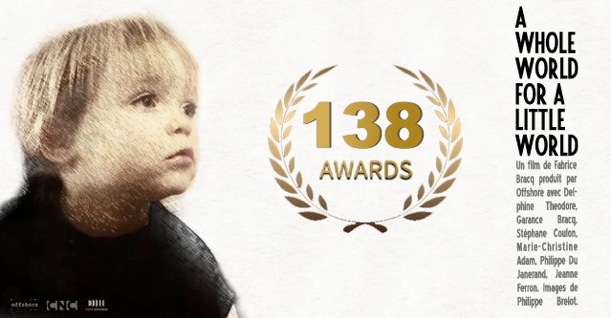

LE MONDE DU PETIT MONDE
A Whole World for a Little World
COURT MÉTRAGE (15mn)
Avec Delphine Theodore, Garance Bracq,
Stéphane Coulon, Philippe du Janerand,
Marie-Christine Adam
PRODUCTION : OFFSHORE
Avec la participation de FRANCE TÉLÉVISIONS

Sélections FESTIVALS
1- UK, GLASGOW : FEEL THE REEL INTERNATIONAL FILM FESTIVAL Fev 2017
Best of the Fest
Best Director
Best Screenplay
Best Actress (Delphine Theodore)
Best Original Score (Gregory Libessart)
2- FRANCE, CABESTANY : LES RENCONTRES DU COURT «IMAGE IN CABESTANY» Mars 2017
3- USA, JEFFERSONTON : WORLD MUSIC & INDEPENDENT FILM FESTIVAL Juillet 2017
4- USA, LOS ANGELES : LUCKY STRIKE FILM FESTIVAL Sept 2017
5- ESPAGNE, BARCELONE : FILMETS BADALONA FILM FESTIVAL Oct 2017
6- VENEZUELA, PUERTO LA CRUZ : FINDECOIN Fev 2017
7- UK, LONDRES : LONDON INDEPENDENT FILM AWARDS Mars 2017
Best Foreign Short
8- USA, OAKLAND : I HELLA LOVE SHORTS Mars 2017
Audience Choice Award
9- ESPAGNE, SARAGOSSE : LA MIRADA TABU Dec 2017
10- USA, MANALAPAN : PALM BEACH INTERNATIONAL FESTIVAL Mars 2017
11- CANADA, MONTREAL : SWEET AS FILM FESTIVAL Mars 2017
Best Sweet As Film
Best Director
Best Cinematography (Philippe Brelot)
Best Score (Gregory Libessart)
12- USA, NEW YORK : SHORT FILM FESTIVAL@NORTH SHORE TOWERS Oct 2017
13- ITALIE, SICILE : MEDFF Mars 2017
Honorable mention
14- LITUANIE, VILNIUS : WOLVES INDEPENDENT INTERNATIONAL FILM AWARDS Fev 2017
Best Short Narrative
15- ARGENTINE, LANUS : LANUS FESTIVAL INTERNACIONAL DE CINE Mars 2017
Audience Award
16- USA, CONCORD : DERRY REGIONAL ALES & FILMS FESTIVAL Avril 2017
Best of the Fest
Audience Choice : Best Film
Outstanding Foreign Film
17- INDE, HARYANA : HARYANA INTERNATIONAL SHORT FILM FESTIVAL Avril 2017
18- FRANCE, BOURG EN BRESSE : COURTS DU VENDREDI Mars 2017
Vote du Public / Audience Award
19- ITALIE, MODICA : VERSI DI LUCE Mars 2017
20- RUSSIE, ST-PETERSBOURG : LES SAISONS PARISIENNES DE ST-PETERSBOURG Juillet 2017
21- USA, EVANSVILLE : THE ALHAMBRA THEATRE FILM FESTIVAL Avril 2017
Grand Jury Award
Best Foreign Film
22- FRANCE, BOURG EN BRESSE : LES RENCONTRES DU COURT METRAGE Juin 2017
23- ROUMANIE, BUCAREST : SHORT TO THE POINT Mars 2017
Best Film
Best Director
24- USA, SAN FRANCISCO : MOVING MAKING THROUGHOUT THE BAY Mars 2017
Winner MMTB-iFF
25- USA, LA JOLLA : THE ACCOLADE GLOBAL FILM COMPETITION Mars 2017
Award of Excellence Special Mention
26- UK, GLASGOW : THE MONTHLY FILM FESTIVAL Mars 2017
Best Screenplay
Best Actress (Delphine Theodore)
2nd Best Film
Best Editing
27- USA, PARMA : PARMA DRIVE-IN FILM FESTIVAL Avril 2017
Best Actress (Delphine Theodore)
28- USA, VERO BEACH : VERO BEACH FILM FESTIVAL Juin 2017
Best Dramatic Short
29- USA, RIVERSIDE : RIVERSIDE INTERNATIONAL FILM FESTIVAL Avril 2017
Best Short
Best Editing
30- UK, DERBY : DERBY FILM FESTIVAL Mai 2017
31- USA, PITTSBURGH : CARNEGIE MELLON INTERNATIONAL FILM FESTIVAL Mars 2017
Grand Prix
32- USA, FORT WAYNE : HOBNOBBEN FILM FESTIVAL Juin 2017
Best Short
33- CHILI, TALCA : TALCA INTERNATIONAL SHORT FILM FESTIVAL Avril 2017
34- USA, ALBUQUERQUE : ALBUQUERQUE FILM FESTIVAL & COMIC CON Juin 2017
35- UK, BLACKPOOL : FYLDE FILM SHOWCASE Mars 2017
36- AUSTRALIE, LILYDALE : YARRA VALLEY FILM FESTIVAL Mars 2017
37- USA, TOLEDO : GLASS CITY FILM FESTIVAL Mai 2017
38- INDE, ALLAHABAD : TAPAS FILM FESTIVAL Avril 2017
39- ROUMANIE, BUCAREST : BUCHAREST SHORTCUT CINEFEST Aout 2017
40- ESPAGNE, VALENCE : FESTIVAL INTERNACIONAL DE CORTOMETRAJES RADIO CITY Mai 2017
41- PARAGUAY, SAN LORENZO : FESTIVAL DE CINE DE SAN LORENZO, Avril 2017
42- SUISSE, SIERRE : DREAMAGO PLUME & PELLICULE Mai 2017
43- ESPAGNE, GINES : GINES EN CORTO Avril 2017
Audience Award
44- ESPAGNE, CADIZ : CERTAMEN INTERNACIONAL DE CORTOMETRAJES DE LA LINEA Mai 2017
Best international short
45- ESPAGNE, MADRID : IMAGINEINDIA INTERNATIONAL FILM FESTIVAL Mai 2017
46- IRELAND, CORK : FASTNET FILM FESTIVAL Mai 2017
Best screenplay
47- ITALIE, ROME : TRACCE CINEMATOGRAFICHE FILM FEST Juin 2017
48- ESPAGNE, MADRID : SERENDIPITY THE CAT Mai 2017
49- ESPAGNE, MARBELLA : PREMIOS LATINO Mai 2017
50- USA, PRINCETOWN : NASSAU FILM FESTIVAL Mai 2017
Best of the Fest
51- PEROU, LIMA : VILLA MARIA DEL TRIUNFO Y LIMA SUR FILM FESTIVAL Avril 2017
Segundo Lugar Cortometraje
52- INDE, MAHARASHTRA : LONAVLA INTERNATIONAL FESTIVAL OF FILM Sept 2017
53- ESPAGNE, CANTABRIA : FESTIVAL INTERNACIONAL DE CORTO DE TORRELAVEGA Mai 2017
1st Prize / Premio Vaca Dorada al Mejor Cortometraje
54- COLOMBIE, BARRANQUILLA : INTERNATIONAL CINE A LA CALLE SHORT FILM FESTIVAL Mai 2017
55- CANADA, ALBERTA : OKOTOKS FILM FESTIVAL Juin 2017
Best Picture
56- FRANCE, REMALARD EN PERCHE : FESTIVAL JEUNESSE TOUT COURTS Juin 2017
Prix du Jury Jeune
57- ESPAGNE, IBIZA : IBIZA SHORT FILMS Mai 2017
58- ITALIE, CERANO : FESTIVAL INTERNAZIONALE CORMETRAGGI CERANO FILM Juin 2017
1st Prize
59- ROUMANIE, PIATRA-NEAMT : STONEFAIR INTERNATIONAL FILM FESTIVAL Mai 2017
Best Actress
Second place
60- USA, HERMOSA BEACH : SOUTH BAY FILM & MUSIC FESTIVAL Juin 2017
61- ESPAGNE, MURCIA : MUESTRA DE CORTOMETRAJES CASA DEL RELOJ Mai 2017
62- PHILIPPINES, GUIMARAS : CINEMANGGA GUIMARAS FILM FESTIVAL Mai 2017
63- USA, NEW YORK : ALL SHORTS IRVINGTON FILM FESTIVAL Avril 2017
Audience Award
Best Cinematography
64- USA, NEW YORK : ASBURY SHORTS USA Avril 2017
65- FRANCE, PARIS : C’EST PAS LA TAILLE QUI COMPTE Juin 2017
66- FRANCE, VEBRON : FESTIVAL INTERNATIONAL DU FILM DE VEBRON Juillet 2017
67- USA, MACON : MACON FILM FESTIVAL Juillet 2017
Audience Award
68- ESPAGNE, BUEU : FICBUEU Sept 2017
69- MEXIQUE, MEXICO : FESTIVAL INTERNACIONAL DE CINE DE HIDALGO Juin 2017
70- UK, ST ALBANS : ST ALBANS FILM FESTIVAL Juillet 2017
71- ITALIE, FABRIANO : FABRIANO FILM FEST Juin 2017
Audience Award
Best Short Film young jury
72- ESPAGNE, CIUDAD REAL : FESTIVAL CORTO DE CIUDAD REAL Juin 2017
73- COLOMBIE, BOGOTA : FESTIVAL DE CINE ESPIRITUAL CONTRACORRIENTE Juillet 2017
Best Short
74- INDE, NEW DEHLI : GIIFFA Juin 2017
75- USA, MARYLAND : FREDERICK FILM FESTIVAL Juin 2017
76- EQUATEUR, PORTOVIEJO : PORTOVIEJO FILM FESTIVAL Juin 2017
Best Director
77- VENEZUELA, PUERTO LA CRUZ : FIVE CONTINENTS INTERNATIONAL FILM FESTIVAL Mai 2017
Best Short film
Best Drama short film
Best Director
Best supporting actor (Philippe du Janerand)
Best Actress (Delphine Theodore)
Best Editing
Special mention Original score music
Special mention Costume design
Inktip Award
78- FRANCE, GISORS : FESTIVAL TOUT COURT DE GISORS Juillet 2017
Coup de Coeur du Jury Lycéen
79- COLOMBIE, CUCUTA : FESTIVAL INTERNACIONAL DE CINE DE CUCUTA Juillet 2017
80- USA, VENICE : COLUMBIA GORGE INTERNATIONAL FILM FESTIVAL Sept 2017
Family Award
81- INDE, MUMBAI : TWIN LION INTERNATIONAL SHORT FILM FESTIVAL Juin 2017
82- USA, INDIANA : YES FILM FESTIVAL Oct 2017
Audience Award
83- USA, LOS ANGELES : LOS ANGELES CINEFEST Janv 2018
84- SUEDE, STOCKHOLM : STOCKHOLM INDEPENDENT FILM FESTIVAL Juillet 2017
85- USA, SACRAMENTO : SACRAMENTO FRENCH FILM FESTIVAL Juin 2017
86- ALLEMAGNE, DETMOLD : INTERNATIONAL SHORT FILM FESTIVAL DETMOLD Juillet 2017
87- ARGENTINE, BUENOS AIRES : MAIPU SHORTS COMEDY FILM FESTIVAL Oct 2017
88- FRANCE, PARIS : FESTIVAL DU FILM MERVEILLEUX & IMAGINAIRE Juin 2017
Prix Junior
89- INDE, MALAVLI PUNE : LIFFT INDIA Sept 2017
Best Actress (Delphine Theodore)
90- ESPAGNE, HUELVA : ISLANTILLA CINEFORUM Aout 2017
91- USA, NEWARK : NEWARKIFF Sept 2017
92- UK, NEW MILLS : HIGH PEAK INDEPENDENT FILM FESTIVAL Juillet 2017
93- ITALIE, AMALFI : IN COSTIEERA MALFITANA Juin 2017
94- GRECE, PATRAS : INTERNATIONAL ASTO SHORT FILM FESTIVAL Juin 2017
95- ARGENTINE, SANTA CRUZ : FESTIVAL DE CINE DE SANTA CRUZ Juin 2017
96- VENEZUELA, MARACAY : MARACAY INTERNATIONAL FILM FESTIVAL Juin 2017
Best Actress (Delphine Theodore)
97- SUISSE, MUNSINGEN : AARETALER KURZFILMTAGE Nov 2017
Audience Award 3rd
98- FRANCE, RAMBOUILLET : FESTIVAL DE COURTS METRAGES DE RAMBOUILLET Juin 2017
99- MALTE, MALTE : MALTA FILM FESTIVAL Aout 2017
Best Picture
Best Editing
100- CANADA, THUNDER BAY : BAY STREET FILM FESTIVAL Sept 2017
101- BRESIL, RIO : CINE CURTAS LAPA Nov 2017
Best International film
Best Director
102- USA, NEW YORK : WOODSTOCK MUSEUM FILM FESTIVAL Sept 2017
103- FRANCE, ESPALION : FESTIVAL DU FILM D’ESPALION Sept 2017
104- USA, BIRMINGHAM : SIDEWALK FILM FESTIVAL Aout 2017
105- ESPAGNE, ALICANTE : EL RODEO FILM FEST Juillet 2017
106- GRECE, MYKONOS : MYKONOS BIENNALE Sept 2017
107- USA, MILWAUKEE : MILWAUKEE SHORT FILM FESTIVAL Sept 2017
108- FRANCE, BEAUREPAIRE : RENCONTRES DE BEAUREPAIRE Oct 2017
109- USA, DENVER : BLISSFEST333 Aout 2017
Best of the Fest
Best Drama
Best Screenplay
110- ESPAGNE, CIUDAD REAL : FESTIVAL INTERNACIONAL DE CALZADA DE CALATRADA Juillet 2017
Prix du Jury
Prix du public
111- ESTONIE, TALLIN : THE UNPRECEDENTED CINEMA Juillet 2017
112- ESPAGNE, MADRID : SHORT OF THE YEAR Juillet 2017
Special Jury mention
113- IRAN, TEHERAN : URBAN INTERNATIONAL FILM FESTIVAL Aout 2017
Best Fiction
114- ESPAGNE, AYERBE : AYERBE FILM FESTIVAL Aout 2017
Prix du Jury
115- ESPAGNE, FUENGIROLA : FESTIVAL INTERNATIONAL DE CINE DE FUENGIROLA Sept 2017
116- UK, LONDRES : LONDON INTERNATIONAL STORY FIRST FILM FESTIVAL Janv 2018
117- ARMENIE, EREVAN : SOSE INTERNATIONAL FILM FESTIVAL Oct 2017
Prix du public
118- UK, EDINBURGH : FRENCH FILM FESTIVAL UK Dec 2017
119- MEXIQUE, MEXICO : 24 RISAS POR SEGUNDO, FESTIVAL DE CINE Y COMEDIA Aout 2017
120- BOLIVIE, BOGOTA : BOGOTA CITY CHILDREN AND ADOLESCENTS FILM FESTIVAL Sept 2017
121- ESPAGNE, VILLAMAYOR : FEC VILLAMAYOR DE CINE Aout 2017
Meilleur court métrage étranger
Meilleur montage
122- ITALIE, SICILE, FAVARA : FARM FILM FESTIVAL Aout 2017
Best Short Farm
Best Actress (Delphine Theodore)
123- EGYPTE, CAIRE : AM EGYPT FILM FESTIVAL Aout 2017
124- UK, ST LEONARDS : HASTINGS FILM FRINGE Sept 2017
125- IRAK, SLEMANI : SLEMANI INTERNATIONAL FILM FESTIVAL Oct 2017
Best International Short Film
126- FRANCE, MOULINS SUR ALLIER : FESTIVAL JEAN CARMET Oct 2017
127- ESPAGNE, ALICANTE : FESTIVAL DE CINE PEQUENO Aout 2017
128- USA, NEW YORK : REVOLUTION ME FILM FESTIVAL Aout 2017
IPitchTV Award
129- MALTE, GOZO : GOZO FILM FESTIVAL Aout 2017
130- USA, FAYETTEVILLE : FAYETTEVILLE FILM FESTIVAL Sept 2017
Best Foreign Film
131- FRANCE, BOURG EN BRESSE : LA BALADE DES COURTS EN PAYS DE GEX Aout 2017
132- USA, NEW YORK : WOODSTOCK MUSEUM FILM FESTIVAL Sept 2017
133- ESPAGNE, VALDEALGORFA : PLOT-POINT Aout 2017
Prix du Public
134- FRANCE, LA CIOTAT : INTERNATIONAL BEST SHORT FILMS FESTIVAL Oct 2017
135- ESPAGNE, BADAJOZ : CERTAMEN DE CORTOMETRAJES EL PECADO Aout 2017
136- BRESIL, RIO : FESTIVAL CINE CURTAS LAPA Nov 2017
137- ITALIE, PADOVA : METRICAMENTE CORTO Sept 2017
Best Director
138- ESPAGNE, ALHAMA DE GRANADA : FESTIVAL ALHAMA DE CIUDAD DE CINE Aout 2017
Best Short
139- INDONESIE, BALI : MINIKINO FILM WEEK Oct 2017
140- EQUATEUR, GUAYAQUIL : FESTIVAL INTERNACIONAL DE CINE DE GUAYAQUIL Sept 2017
141- ESPAGNE, XABIA : RIURAU FILM FESTIVAL Sept 2017
Special Jury mention
142- USA, COLUMBUS : WAY DOWN FILM FESTIVAL Oct 2017
143- COLOMBIE, BOLIVAR : FESTICINEKIDS CARTAGENA Sept 2017
Best Short
144- SUISSE, BIENNE : FESTIVAL DU FILM FRANCAIS D’HELVETIE Sept 2017
145- TURQUIE, ANKARA : HAK-IS SHORT FILM FESTIVAL Dec 2017
146- USA, COLORADO : NEDERLAND FILM FESTIVAL Sept 2017
Best Film Award
147- USA, BEND : BENDFILM FESTIVAL Oct 2017
148- USA, ROCKVILLE : COLORLAB’S SUMMER SHORTS Aout 2017
149- SUEDE, VASTERAS : VASTERAS FILM FESTIVAL Sept 2017
150- LITUANIE, VILNIUS : RA INTERNATIONAL INDEPENDENT FILM AWARDS Aout 2017
151- INDE, MUMBAI : CINEMA OF THE WORLD Sept 2017
152- USA, LOS ANGELES : LUCKY STRIKE FILMS FESTIVAL Sept 2017
Best Foreign Drama
153- SERBIE, MILANOVAC : MEDUNARODNI FESTIVAL KRATKOG FILMA KRAKTKA FORMA Oct 2017
154- USA, LOS ANGELES : CATALINA FILM FESTIVAL Oct 2017
155- COREE DU SUD, SEOUL : SEOUL INT’L YOUTH FILM FESTIVAL Oct 2017
156- ESPAGNE, PONFERRADA : FESTIVAL INTERNACIONAL DE CINE DE PONFERRADA Oct 2017
157- ROUMANIE, BUCAREST : BUCHAREST FILM AWARDS Oct 2017
158- PORTO RICO, PORTO RICO : FESTIVAL INTERNACIONAL DE CINE FINE ARTS Oct 2017
Best International Short Film Award
159- USA, SANFORD : SANFORD INTERNATIONAL FILM FESTIVAL Oct 2017
160- UK, LONDRES : LONDON GOLDEN SCOUT IFF Nov 2017
161- FRANCE, HENDAYE : HENDAIA FILM FESTIVAL Oct 2017
162- COLOMBIE, BARRANQUILLA : ATLANTIC INTERNATIONAL FILM FESTIVAL Sept 2017
Special Jury Award
163- USA, LOS ANGELES : THE HUB FILM FESTIVAL Sept 2017
Best Short over 10mn
164- ITALIE, MONTECATINI TERME : MONTECATINI INTERNATIONAL SHORT FILM FESTIVAL Oct 2017
165- CANADA, MONTREAL : FESTIVAL VUES DU MONDE Sept 2017
166- AFRIQUE DU SUD, CAPE TOWN : CAPE TOWN INTERNATIONAL FILM MARKET & FESTIVAL Oct 2017
167- SUISSE, AARAU : BLACKBOX SHORTFILM FESTIVAL Sept 2017
168- USA, AIKEN : SOUTHERN CITY FILM FESTIVAL Nov 2017
Honorable Mention
169- ESPAGNE, GALDAR : FIC GALDAR Oct 2017
170- BIELORUSSIE, MINSK : KINOSMENA FILM FESTIVAL Sept 2017
171- CANADA, HAMILTON : CANADA FILM MARKET Nov 2017
172- USA, NAPLES : NAPLES INTERNATIONAL FILM FESTIVAL Oct 2017
173- USA, FAIRHOPE : FAIRHOPE FILM FESTIVAL Nov 2017
174- USA, ROYAL OAK : ROYAL STARR FILM FESTIVAL Oct 2017
175- PARAGUAY, ESTE : CIUDAD DEL ESTE INDEPENDENT FILM FESTIVAL Sept 2017
Best Short
176- CANADA, NEW WESTMINSTER : NEW WEST FILM FEST Oct 2017
177- ESPAGNE, TARRAGONE : FESTIVAL INTERNACIONAL DE CURTMETRATGES DE VILA-SECA Oct 2017
178- MEXIQUE, JALISCO : FIC AUTOR Nov 2017
179- FRANCE, PARIS : PARIS COURTS DEVANT ILE DE FRANCE Oct 2017
Prix du Public
180- USA, ARLINGTON : ARLINGTON INTERNATIONAL FILM FESTIVAL Oct 2017
181- FRANCE, ESTAVAR : FESTIVAL DU FILM TRANSFRONTALIER Oct 2017
Prix du Jury
Prix du Public
182- USA, ALAMEDA : ALAMEDA INTERNATIONAL FILM FESTIVAL Nov 2017
183- UK, COLCHESTER : COLCHESTER FILM FESTIVAL Nov 2017
184- ROUMANIE, CLUJ : BEST FILM AWARDS Oct 2017
Best Short
185- ROUMANIE, MURES : TRANSYLVANIA CINEMA AWARDS Oct 2017
Best Short
Best Actress
Best Director
186- ITALIE, NAPLES : CORTISONANTI Nov 2017
Best International Short
187- ITALIE, NOVARE : NOVARA CINE FESTIVAL Oct 2017
Prix du Jury Etudiant
Meilleure Photographie
188- USA, ERIE : GREAT LAKES INTERNATIONAL SHORTS FILM Oct 2017
189- BENIN, COTONOU : FESTIVAL INTERNATIONAL DU CINEMA NUMERIQUEDE COTONOU Dec 2017
190- CANADA, GATINEAU : FESTIVAL INTERNATIONAL DU COURT METRAGE EN OUTAOUAIS Nov 2017
191- USA, MCALLEN : CINESOL FILM FESTIVAL Nov 2017
Best Short
192- UK, LONDRES : LONDON EYE INTERNATIONAL FILM FESTIVAL Oct 2017
193- ESPAGNE, CONSUEGRA : FESTIVAL DE CINE EN CORTO CIUDAD DE CONSUEGRA Oct 2017
194- USA, ST CLOUD : ST CLOUD FILM FEST Nov 2017
195- USA, PLATTSBURGH : LAKE CHAMPLAIN INTERNATIONAL FILM FESTIVAL Nov 2017
196- CHINE, SHENZHEN : CHINA INTERNATIONAL NEW MEDIA SHORT FILM FESTIVAL Nov 2017
Best Drama
197- USA, SAN DIEGO : THE PLEBEIAN FILM FESTIVAL Nov 2017
198- MAROC, TANGER : TANGIER FILM FESTIVAL Dec 2017
199- FRANCE, MERIEL : FESTIVAL DU COURT METRAGE AU PAYS DE GABIN Nov 2017
200- USA, LANCASTER : LANCASTER INTERNATIONAL FILM FESTIVAL Nov 2017
Grand Prize
Best Drama
201- FRANCE, ANGLET : FIFAVA Nov 2017
202- BRESIL, RIO GRANDE DO SUL : FESTIVAL DE CINEMA DE BENTO GONCALVES Oct 2017
Meilleur Scénario
204- FRANCE, FECAMP : FESTIVAL EURYDICE Nov 2017
Prix du Public
205- COLOMBIE, CALI : FESTIVAL INTERNACIONAL DE CINE INFANTIL Y JUVENIL, CALIBELULA Oct 2017
206- USA, BROWNSVILLE : BROWNVILLE INTERNATIONAL FILM FESTIVAL Nov 2017
207- BOSNIE, SARAJEVO : PRVI KADAR INTERNATIONAL FILM FESTIVAL Nov 2017
208- ITALIE, AREZZO : WAG FILM FESTIVAL Nov 2017
209- ESPAGNE, LA SOLANA : FESTIVAL DE CINE Y VINO «CIUDAD DE LA SOLANA» Dec 2017
210- USA, NEW YORK : NEW YORK NO LIMITS FILM SERIES Nov 2017
211- BANGLADESH, CHITTAGONG : CHITTAGONG SHORT FILM FESTIVAL Janv 2018
Best Film Award (Foreign language)
212- USA, WASHINGTON DC : INTERNATIONAL SHORTS Dec 2017
213- COLOMBIE, IBAGUE : IBAGUE FILM FESTIVAL Nov 2017
214- INDE, CALCUTTA : AFC GLOBAL FEST Nov 2017
215- FRANCE, BOUGIVAL : COURT MAINTENANT mars 2017
216- ESPAGNE, BARCELONE : ARTMOV FESTIVAL Nov 2017
217- ESPAGNE, BARCELONE : COLLFANTASY FEST Nov 2017
218- PANAMA, PANAMA : TORRECINOS FILM FESTIVAL Nov 2017
219- ITALIE, RIMINI : AMARCORT FILM FESTIVAL Dec 2017
220- ESPAGNE, ALICANTE : CORTOPILAR Dec 2017
221- USA, SAN LUIS OBISPO : SAN LUIS OBISPO INTERNATIONAL FILM FESTIVAL Mars 2018
222- USA, LOS ANGELES : WHITE WHALE INTERNATIONAL FILM FESTIVAL Nov 2017
223- ESPAGNE, ZALLA : 36 ENKARZINE Nov 2017
224- USA, OXFORD : OXFORD FILM FESTIVAL Fev 2017
225- ESPAGNE, VILA-REAL : FESTIVAL INTERNACIONAL DE CORTOMETRAJES CINECULPABLE Nov 2017
226- ROUMANIE, LASI : SHORT STOP INTERNATIONAL FILM FESTIVAL Dec 2017
Best Actress (Delphine Theodore)
227- AUTRICHE, VIENNE : BLUE DANUBE FILM FESTIVAL Dec 2017
228- FRANCE, MAISONS LAFFITTE : FESTIVAL DE FILMS COURTS DE MAISONS LAFFITTE Janv 2018
Prix du Public
229- USA, DURANGO : DURANGO INDEPENDENT FILM FESTIVAL Mars 2018
230- USA, ERIE : ERIE INTERNATIONAL FILM FESTIVAL Dec 2017
231- CANADA, TORONTO : CANADA SHORTS FILM FESTIVAL Dec 2017
232- ESPAGNE, SEVILLE : PILAS EN CORTO Dec 2017
Best Score Music (Gregory Libessart)
233- ROUMANIE, BUCAREST : SHORT TO THE POINT ANNUAL AWARDS Dec 2017
Best Film
234- POLOGNE, JELENIA GORA : INTERNATIONAL FILM FESTIVAL ZOOM - ZBLIZENIA Fev 2018
235- TAIWAN, TAICHUNG CITY : FORMOSA FESTIVAL OF INTERNATIONAL FILMMAKER AWARDS Dec 2017
Short Film Award of Jury Special mention
236- INDE, CALCUTTA : KALPANIRJHAR INTERNATIONAL SHORT FILM FESTIVAL Dec 2017
237- USA, LOS ANGELES : BACK IN THE BOX Dec 2017
238- USA, CLEVELAND : CLEVELAND INTERNATIONAL FILM FESTIVAL Avril 2018
239- FRANCE, SENS : CLAP 89 Avril 2018
240- USA, SEDONA : SEDONA INTERNATIONAL FILM FESTIVAL Mars 2018
Best Short
241- ITALIE, SICILE : CORTIAMO Janv 2018
Audience Award
242- ITALIE, SICILE : CEFALÙ dec 2018
243- USA, ATLANTIC CITY : GARDEN STATE FILM FESTIVAL Mars 2017
244- ALLEMAGNE, BAYREUTH : KONTRAST FILMFEST Mars 2018
245- FRANCE, LE MANS, FESTIVAL DES 24 COURTS HORS COMPETITION Fev 2018
246- FRANCE, MAMERS : MAMERS EN MARS Mars 2018
247- USA, RICHMOND : RICHMOND INTERNATIONAL FILM FESTIVAL Mars 2018
Best Narrative Short
248- FRANCE, SAINT-MAUR : LA FETE DU COURT METRAGE Mars 2018
249- INDE, JAIPUR : PIGGY BANK INTERNATIONAL SHORT FILM FESTIVAL Fev 2018
250- UK, LONDRES : FALCON INTERNATIONAL FILM FESTIVAL Mars 2018
Best Drama
251- ESPAGNE, BARCELONE : BRAIN FILM FEST SOLE TURA Mars 2018
252- USA, GRAND RAPIDS : GRAND RAPIDS FILM FESTIVAL Avril 2018
Best Film
253- ESPAGNE, CIUDAD REAL : FECICAM 9 FESTIVAL DE CINE DE CASTILLA-LA MANCHA Mars 2018
Best International Film
254- FRANCE, ILLE ET VILAINE : CINEMA 35 EN FÊTE mars 2018
Prix du Public
255- FRANCE, PARIS : FESTIVAL DE COURTS METRAGES DE LA LIGUE CONTRE LE CANCER mars 2018
Prix du Centenaire
256- FRANCE, MEYZIEU : FESTIVAL DU CINEMA EUROPEEN mars 2018
Prix du Public
257- USA, NEWPORT BEACH : NEWPORT FILM FESTIVAL Mai 2018
258- FRANCE, LEVALLOIS-PERRET : FESTIVAL P’TIT CLAP Avril 2018
Prix des Collégiens
259- USA, CLEVELAND : CLEVELAND INTERNATIONAL FILM FESTIVAL Avril 2018
Audience Choice Award for Best International Film
260- USA, NEW YORK : METERS INTERNATIONAL FILM FESTIVAL Avril 2018
261- CANADA, ROUYN-NORANDA : FESTIVAL INTERNATIONAL EN ATIBI-TEMISCAMINGUE Nov 2017
262- FRANCE, PARIS : PRIX UNIFRANCE DU COURT METRAGE Nov 2017
263- CANADA, GRANDE PRAIRIE ALBERTA : REEL SHORTS FILM FESTIVAL Mai 2018
264- MEXIQUE, PUEBLA : KINE MUESTRA INTERNACIONAL DE CORMETRAJES Avril 2018
265- USA, BALTIMORE : SAY IT LOUD FILM FESTIVAL Mai 2018
266- VENEZUELA, PUERTO LA CRUZ : BEST OF FIVE CONTINENTS INTERNATIONAL FILM FESTIVAL Mai 2018
Best of FICOCC
267- CANADA, TORONTO : REDLINE INTERNATIONAL FILM FESTIVAL Mars 2018
Meilleur Scénario / Best Screenplay
268- ESPAGNE, SEVILLE : ASAENES SALUD MENTAL SEVILLA Mai 2018
269- USA, GEORGIA : REJECTED REELS FILM FESTIVAL Juin 2018
Best Narrative Short Film
270- ITALIE, TELESE : ARTELESIA FILM FESTIVAL Mars 2018
Premio Social Filmfestival
271- USA, OKLAHOMA : FLY FILM FESTIVAL Aout 2018
272- ESPAGNE, MURCIA : EL FESTIVALICO Juin 2018
273- USA, PORT TOWNSEND : PORT TOWNSEND FILM FESTIVAL Sept 2018
274- CANADA, MONTREAL : COURTS D’UN SOIR Aout 2018
275- USA, CHARLOTTE : 15 SHORT FILM FESTIVAL Oct 2019
276- FRANCE, SAINT MITRE LES REMPARTS : FESTIVAL DU FILM INDEPENDENT SMR13 Nov 2019
Prix du public
277- FRANCE, THIETREVILLE : EURYDICE Fev 2020
